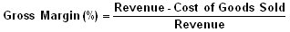

A company's total sales revenue minus its cost of goods sold, divided by the total sales revenue, expressed as a percentage. The gross margin represents the percent of total sales revenue that the company retains after incurring the direct costs associated with producing the goods and services sold by a company. The higher the percentage, the more the company retains on each dollar of sales to service its other costs and obligations.
This number represents the proportion of each dollar of revenue that the company retains as gross profit. For example, if a company's gross margin for the most recent quarter was 35%, it would retain $0.35 from each dollar of revenue generated, to be put towards paying off selling, general and administrative expenses, interest expenses and distributions to shareholders. The levels of gross margin can vary drastically from one industry to another depending on the business. For example, software companies will generally have a much higher gross margin than a manufacturing firm.
{kind=link}